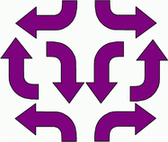

소프트웨어 개발 방법론에 대해 말해보고자 한다.
초기 국내 소프트웨어 개발자들은 독학한 사람들이 대부분이었다.
그 때문에 주먹구구식 개발과 독단적인 판단이 개발의 중심에 자리잡고 있었다.
나도 예외라고 할 순 없겠다.
근래에는 전산 전문 인력이 대량으로 배출되고 있지만 이들 역시 소프트웨어 개발 방법론에는 회의적이다.
그나마 학과 과정으로 배우기라도 했으니 그 목적과 필요성을 '알고'는 있지만 대형 프로젝트에 참여해본 경험이 없기 때문에 '느끼지'는 못하는 것이다.
심지어 실무에 나와서도 몇몇 대기업을 제외하고는 여전히 주먹구구식 개발에 자신들의 생계를 내걸고 있다.
여기서는 소프트웨어 개발 방법론에서 거론되는 '소프트웨어에 대한 오해'에 대해 생각해보도록 하자.
'개발 방법론'이라는 메인 타이틀과는 다르게 제법 재미있는(적어도 내 생각에는...) 내용이다.
'소프트웨어에 대한 오해'란 과연 무엇일까?
다음 글에서 계속...